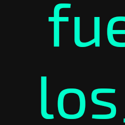

Después de una búsqueda más exhaustiva por los pasillos del museo, finalmente descubres una puerta que sí estaba desbloqueada, casi oculta en un rincón del edificio. Al abrirla, te encuentras con una pequeña sala de exposición que parece haber sido preservada especialmente para una sola pieza.
En el centro de la sala, iluminada por focos direccionales, hay una exposición con un cuadro extraño: letras en azul neón brillante sobre un fondo completamente negro. Las letras están dispuestas de manera aparentemente aleatoria, sin formar palabras reconocibles ni seguir ningún patrón obvio que puedas discernir.
La sala está en perfecto estado de conservación, y el cuadro parece ser una pieza importante de la colección del museo. Por sí solas, estas letras no parecen significar nada, pero intuyes que deben ser parte de algún código o mensaje más grande. Decides memorizarlas para futuras referencias.
